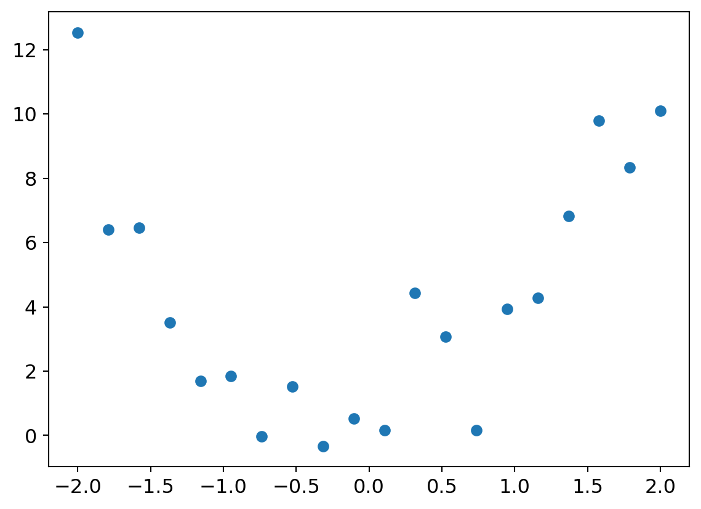
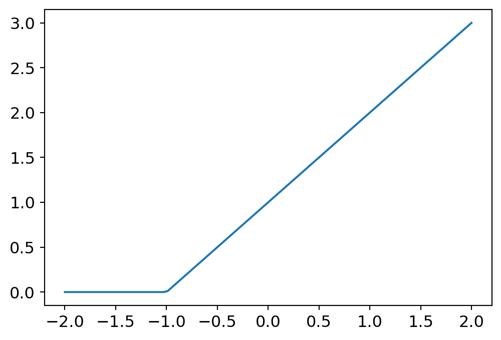

Aha, bet you didn’t think I’d write a second post! Wait, that was me.
It’s been just over a week since my first post, which I wrote after completing Chapter 2 of the fast.ai “Practical Deep Learning for Coders” course. The course takes a sort of “top down” approach to the topic and has you creating an image classifer right off the bat, followed by deploying another one to a production website by the end of the second chapter. It’s fast! It’s satisfying! It’s… a bit magic.
So Chapter 3 brings you back down to Earth and starts explaining how this all works. This is more of a traditional groundwork-laying chapter and it’s where I’ve dabbled with this stuff in the past (and quickly dropped off from). The second time around though? Stuff is starting to stick.
The fastai course has both videos and a ‘book’, which is really a series of Jupyter notebooks (though you can buy a print copy if you want - I imagine it’s much less effective to be honest). They sort of cover mostly the same topics but they do handle it in different ways, and this reinforcement is working well for me. It feels slow (because you’re exploring the same ground twice) but this is a pretty fundamental and meaty chapter, so I appreciate it here.
In fact, by the end of the chapter, simple neural networks in PyTorch, with the exception of gradient calculations, have been pretty well demystified. I’m still not comfortable with all this stuff yet but I was able to follow along quite well.
(Alright, I just spent 15 minutes trying to get some ipywidgets to work in this blog post but although the sliders I added worked, they didn’t result in a graph getting re-plotted. Oh well, moving on.)
So what have I really learned so far?
A Quadratic Example
Given some input to a function, you want to get some ouput. To start, let’s consider a quadratic function. You collect some data from the real world, and it looks like this:
<matplotlib.collections.PathCollection at 0x1c0120ba050>

You’d like to have a model (a function here) that could take some input value x and output a good prediction for y. It looks like a quadratic function would work well (because we contrived this example from one), so let’s find some values for \(ax^2 + bx + c\).
We can start with random values for a, b, and c. Then we need to figure out how good they are. In this case, we’d create a function to calculate how bad they are: a mean squared error loss function. Pick some parameter values, calculate the loss. Pick some new parameters, calculate the loss again, see if it went up or down.
Next step would be to automate it. Rather than guess and check though, we can calculate the gradient for the input values. That is, how will each change in the parameter affect the resulting loss? That way, we know which way to change a parameter and, roughly, how big of an effect it will have. PyTorch can calculate these gradients for us, by tagging the input tensor as requires_grad. That means that when the tensor is used in a calculation, PyTorch will perform some internal magic and calculate the gradient for it.
def quad_mse(params): f = mk_quad(*params) # "*" is a Python thing that means spread # the array across the function arguments herereturn mse(f(x), y)quad_mse([1.5, 1.5, 1.5])
tensor(5.8336, dtype=torch.float64)
Here’s how we create an input tensor for our parameters, flag it to say “please calculate the gradients”, and then do so. Note that we called backward() (for back propagation) on the resulting tensor, not the input tensor. This is because we want to figure out how a change in the input parameters will affect the output. The values of the gradients, however, live on the input tensor. It does make sense, but it also feels a bit back and forth-y.
The grad_fn=<MeanBackward0> shows us that PyTorch can calculate gradients from this tensor. Then we call backwards() to do it, and check the resulting grad values on the input tensor:
loss.backward()abc.grad
tensor([-5.1419, 2.8472, -1.1009])
This tells us that increasing the value of the first parameter will decrease the loss a fair bit, decreasing the value of the second parameter will decrease the loss a little bit, and increasing the last parameter will decrease the loss a very little bit.
So now take a step in that direction by modifying our input parameters and calculating the loss again. Note that since modifying the input parameter is “using the tensor in a calculation”, we need to tell PyTorch that this shouldn’t be used to update the gradients on it (or things get wonky).
with torch.no_grad(): abc -= abc.grad*0.01 loss = quad_mse(abc)print(f'loss={loss:.2f}')print(abc)
The loss went from 5.8336 to 5.49, and we can see each of the parameters moved in the direction to minimize the loss! Hooray. Note that we modified abc by moving in the opposite direction of the gradient (to minimize loss, not maximize it) and we also only moved by 0.01, which is called the learning rate. Moving parameters in the opposite direction of the gradient is called gradient descent.
If the learning rate is too low, it will take a long (too long) time to get meaningful results. If it’s too big, the modifications to parameters will be so large that you won’t converge on a useful solution but instead bounce around getting worse results.
Okay so now you could run this a bunch of times and get closer to an ideal set of values for a, b, and c that fit the data well. Cool, now we know how to automatically find parameters to fit a function.
But what about problems that aren’t modeled by quadratics?
Finding great parameters for quadratics isn’t super useful, since they don’t inherently model a lot of things. However, what if I told you there was a magical formula that could model any problem? Well more specifically, a function that could solve any computable problem to an arbitrariliy high level of accuracy?
For any arbitrarily wiggly function, we can approximate it as a bunch of lines joined together. To make it closer to the wiggly function, we just have to use shorter lines. This is known as the universal approximation theorem.
To start, let’s actually downgrade our quadratic example to a linear equation: \(y = mx + b\)
Now if you add together a bunch of linear equations, you’re just going to get a different linear equation, which is still going to be a straight line. In order to get our “short line segment” property to follow an arbitrarily wiggly line, we need to be able to have these equations affect different parts of the output. Enter the rectified linear equation:
def rectified_linear(m,b,x): y = m*x + breturn torch.clip(y, 0.)plot_function(partial(rectified_linear, 1,1))

A rectified linear equation is just a linear equation where any value < 0 is set to 0. That’s it.
Now, if you combine two of these together, you can see how you could start to define arbitrary shapes:
Now if we add together as many of these rectified linear units (aka ReLUs), we could match any arbitrarily wiggly function to whatever degree of accuracy we desire. And it works in more dimensions too (i.e. functions with more than one input).
Okay but where do m1,b1,m2,b2, etc all come from to match the wiggly function? Well that’s the gradient descent iterative approach from earlier.
In a very smoothed over and blurry nutshell: this is machine learning.
Phew this is a long post! This actually only covers the video portion of the chapter. I’ll do a recap of the book part later.